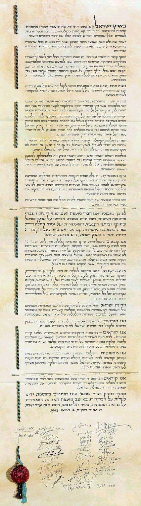

La terre d'Israël est le lieu où naquit le peuple juif. C'est là que s'est formée son identité spirituelle, religieuse et nationale. C'est là qu'il a réalisé son indépendance et créé une culture qui a une signification nationale et universelle. C'est là qu'il a écrit la Bible et l'a offerte au monde.
Contraint à l'exil, le peuple juif est resté fidèle à la terre d'Israël dans tous les pays où il s'est trouvé dispersé, ne cessant jamais de prier et d'espérer y revenir pour rétablir sa liberté nationale.
Motivés par ce lien historique, les Juifs ont lutté au cours des siècles, pour revenir sur la terre de leurs ancêtres et retrouver leur État. Au cours des dernières décennies, ils sont revenus en masse, Ils ont mis en valeur les terres incultes, ont fait renaître leur langue, ont construit des villes et des villages et ont installé une communauté entreprenante et en plein développement qui a sa propre vie économique et culturelle. Ils ont recherché la paix tout en étant prêts à se défendre. Ils ont apporté les bienfaits du progrès à tous les habitants du pays et se sont préparés à l'indépendance souveraine.
En 1897, le premier congrès sioniste, inspiré par la vision de l'État juif de Theodor Herzl, a proclamé le droit du peuple juif au renouveau national dans son propre pays.
Ce droit a été reconnu par la Déclaration Balfour du 2 novembre 1917, et réaffirmé par le mandat de la Société des Nations qui a apporté une reconnaissance internationale formelle au lien historique du peule juif avec la Palestine et à son droit de rétablir son Foyer national.
La Shoah, qui a anéanti des millions de Juifs en Europe, a de nouveau montré le besoin de résoudre le problème dû au manque de patrie et d'indépendance du peuple juif, par le rétablissement de l'État juif, qui ouvrirait ses portes à tous les Juifs et conférerait au peuple juif un statut d'égalité au sein de la communauté des nations.
Les survivants du terrible massacre en Europe, de même que les Juifs venus d'autres pays, n'ont pas abandonné leurs efforts pour rejoindre Israël, en dépit des difficultés, des obstacles et des périls; et ils n'ont pas cessé de revendiquer leur droit à une vie de dignité, de liberté et de travail honnête sur la terre de leurs ancêtres.
Pendant la Seconde Guerre mondiale, la communauté juive de Palestine a apporté sa pleine contribution au combat des nations éprises de liberté contre le fléau nazi. Les sacrifice de ses soldats et son effort de guerre lui ont valu le droit de figurer parmi les nations qui ont fondé l'Organisation des Nations unies.
Le 29 novembre 1947, l'Assemblée générale des Nations unies a adopté une résolution recommandant la création d'un État juif en Palestine. L'Assemblée générale a demandé aux habitants de ce pays de prendre toutes les mesures nécessaires pour l'application de cette résolution. Cette reconnaissance par les Nations unies du droit du peuple juif à établir son État indépendant est irrévocable.
C'est là le droit naturel du peuple juif de mener, comme le font toutes les autres nations, une existence indépendante dans son État souverain.
En conséquence, nous, membres du Conseil national, représentant la communauté juive de Palestine et le Mouvement sioniste mondial, sommes réunis en assemblée solennelle aujourd'hui, jour de la cessation du mandat britannique en Palestine, en vertu du droit naturel et historique du peuple juif et conformément à la résolution de l'Assemblée générale des Nations unies.
Nous proclamons la création de l'État juif en Palestine qui portera le nom d'État d'Israël.
Nous déclarons qu'à compter de la fin du mandat, à minuit, dans la nuit du 14 au 15 mai 1948, et jusqu'à ce que les organismes de l'État régulièrement élus conformément à une Constitution qui sera élaborée par une Assemblée constituante d'ici au 1er octobre 1948, le Conseil national agira en qualité de Conseil provisoire de l'État, et l'Administration nationale fera fonction de gouvernement provisoire de l'État juif, qui sera appelé Israël.
L'État d'Israël sera ouvert à l'immigration des Juifs de tous les pays où ils sont dispersés; il veillera au développement du pays au bénéfice de tous ses habitants; il sera fondé sur les principes de liberté, de justice et de paix ainsi que cela avait été conçu par les prophètes d'Israël; il assurera une complète égalité sociale et politique à tous ses citoyens, sans distinction de religion, de race ou de sexe; il garantira la liberté de culte, de conscience, d'éducation et de culture; il assurera la protection des Lieux saints de toutes les religions, et respectera les principes de la Charte des Nations unies.
L'État d'Israël est prêt à coopérer avec les organismes et les représentants des Nations unies pour l'application de la résolution adoptée par l'Assemblée générale le 29 novembre 1947 et à prendre toutes les mesures nécessaires pour la mise en place de l'Union économique sur l'ensemble de la Palestine.
Nous demandons aux Nations unies d'aider le peuple juif à édifier son État et d'admettre Israël dans la famille des nations.
Victimes d'une agression caractérisée, nous demandons cependant aux habitants arabes de l'État d'Israël de préserver les voies de la paix et de jouer leur rôle dans le développement de l'État, sur la base d'une citoyenneté pleine et égalitaire et d'une juste représentation dans tous les organismes et les institutions - provisoires et permanents - de l'État.
Nous tendons notre main en signe de paix et de bon voisinage à tous les États qui nous entourent et à leurs peuples, et nous les invitons à coopérer avec la nation juive indépendante pour le bien commun de tous. L'État d'Israël est prêt à apporter sa contribution au progrès du Proche-Orient et dans son ensemble.
Nous demandons au peuple juif de par le monde de se tenir à nos côtés dans la tâche d'immigration et de développement et de nous aider dans le grand combat pour la réalisation du rêve des générations passées: la rédemption d'Israël.
Confiants en l'Éternel Tout-Puissant, nous signons cette déclaration en cette séance du Conseil provisoire de l'État, sur le sol de la patrie, dans la ville de Tel- Aviv, cette veille du chabbat, 5 Iyar 5708, 14 mai 1948.
(Version intégrale en anglais sur le site du ministère israélien des Affaires étrangères.)
Mise en ligne le 22 février 2019, par M.R. Macina, sur Academia.edu